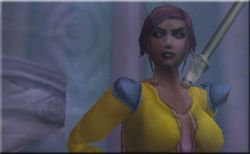

Joué par :
Elivagar Joué par :
[ Information masquée ] Age : 23
Lieu de naisance : Andhoral
Sexe : Femme
Race : Humain
Faction : Alliance
Formation : Prêtre
Guilde : Secret Of a Dawn Artisanat 1 : Couturier
Artisanat 2 : Enchanteur
Informations hrp : Jeune femme d'apparence commune à la peau sombre et au regard déterminé.
Troisième Ère [1]
Lune de la Force [1]
Décade du Panda
Décade du Gorille
Décade de l'Ours [1]
Le temps du souvenir
Héloïse après un instant de silence se décide à prendre la parole, le temps de conter son histoire est venu.
Je suis née à Andorhal, pays maintenant disparus sous la putrescence des Plaguelands de l'Ouest. Ce pays appartenait autrefois à la famille Barov d'Alterac.
Andorhal était une grande ville, le centre commercial de tout le pays à l'est du lac de Lordamere, situé non loin d'une ruine des temps anciens que l'on disait construite par des créatures non humanoïdes. Maintenant ces ruines sont sous la domination du Fléau et il s'y cache la Liche Frostwhisper.
Mais aussi Andorhal est le point de départ de la Peste. Le Fléau a utilisé les réserves de grain pour propager la peste et transformer la population en serviteurs sans âme.
Tout commença avec l'arrivée du Culte des Damnée, l'on ne pris conscience du danger que trop tard, le culte dans le secret le plus noir s'était développé au sein de la population la plus pauvre et a gravit lentement mais sûrement toutes les échelons pour atteindre les plus hautes sphères. La Famille Barov elle même s'est convertit et, pire que cela, a vendu ses terres et son peuple au Roi Liche en contre partie de la vie éternelle.
Mon oncle aussi a succombé au culte des Damnés et c'est peut être grâce à cela que je suis encore vivante. Il essaya de convertir mon père et le reste de sa famille, mais lors de la dispute qui s'ensuivit il en dit trop et mon père compris le danger à venir, il nous fit partir ma mère et moi pour Lordaeron mais resta le temps, nous dit il, de convaincre son frère de revenir à la raison.
Je ne le revis plus jamais.
Nous sommes parties précipitamment avec le strict minimum, la route fut longue mais nous arrivâmes enfin à Lordaeron.
Une fois dans la capitale nous avons essayé d'alerter les gens concernant le Culte des Damnés et d'un possible danger à venir, mais personne ne nous entendis. Le culte des Damnés gangrénais aussi la capitale mais de manière moins importante, les Paladins de l'Aube d'Argent oeuvraient à la protection du peuple.
Les jours, les mois puis les années passèrent sans nouvelles de notre père ma mère en fit son deuil.
Une fois en age pour pouvoir m'imprégner des enseignements de la Lumière ma mère m'envoya dans le NorthShire, où je suivis de longues années d'étude et de recueillement. J'y vécus au calme et en paix pendant de douces années.
Mais j'étais aussi à l'écoute des nouvelles venant de Lordaeron, ma mère m'écrivait souvent et les marchands n'étaient jamais avare de petites anecdotes, je fus emplie d'un sentiment de joie lorsque j'appris que le seigneur Arthas, le propre fils du Roi Terenas, partie à la tête de Paladins pour découvrir la cause et héradiquer le mal qui se répandait au nord.
Deux mois plus tard, par contre, une rumeur glacial soufflait sur les plaines de Tirisfal, le seigneur Arthas serait revenu des contrées du nord en héros après avoir abattu le démon Mal'Ganis, mais il aurait assassiné son propre père et pris le pouvoir en Lordaeron.
Pire une nuée de mort-vivant aurait déferlé sur la capitale et l'aurait anéantie.
Je n'ai plus eu de nouvelle de ma mère.
Après la chute de Lordaeron la capitale Humaine, Silvermoon, la capitale des Hauts-Elfes tomba aussi puis Dalaran la cité magique du Kirin Tor fut réduite en poussière par un démon invoqué des Enfers, Archimonde.
Tout en résistant contre les assauts incessant du Fléau nous apprîmes que le plus fort de la bataille c'était déroulé en Kalimdor, que le démon fut vaincu au sacrifice de lourdes pertes et que l'on avait redécouvert une ancienne race, les Elfes de la Nuit. Nous apprîmes aussi que l'ancienne capitale servait maintenant de base à des morts vivants qui se disent libéré du Fléau et qui se font appeler les Réprouvés.
Une fois mes maîtres convaincu de l'accomplissement de ma formation, je pus faire mes premières armes au service de Stormwind et de l'Alliance.
C'est au cours de mes pérégrinations que je croisais tout d'abord le Chevalier Palidin, celui ci m'introduisit à Maître Lightero et je joignais les rangs du Secret of a Dawn.